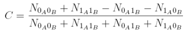
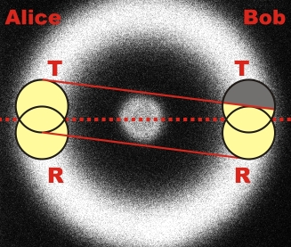

Quantenzufall Kapitel 3:
Zufall an zwei Strahlteilerwürfeln
In den letzten Kapiteln wurde der Quantenzufallsgenerator am Strahlteilerwürfel behandelt und die erzeugte Quantenzufallszahl mit statistischen Testverfahren analysiert. In diesem Kapitel wird der experimentelle Aufbau mit einem Strahlteilerwürfel auf der Seite von Alice mit einem zweiten Strahlteilerwürfel auf der Seite Bob erweitert. Mit dem symmetrischen Aufbau wird über den Quantenzufall qualitativ das Phänomen der Verschränkung eingeführt.
Erweiterung auf zwei Strahlteilerwürfel
Das Zufallsexperiment mit einem Strahlteiler (Abb. 1 links) wird um einen weiteren Strahlteilerwürfel ergänzt (Abb. 1 rechts). Die linke Strahlteilereinheit wird als Alice bezeichnet, die rechte Strahlteilereinheit als Bob.
Abb. 1 Erweiterung des Experimentes auf zwei Strahlteilerwürfel
Das Photon am Strahlteilerwürfel von Alice wird durch das Photon am Strahlteilerwürfel von Bob angekündigt und anders herum ebenso. Im folgenden interaktiven Experiment kann die Seite von Alice und Bob unabhängig voneinander betrachtet werden. Gibt es einen Zusammenhang zwischen dem Zufallsprozess auf der Seite von Alice und auf der Seite von Bob? Im Experiment kann der Kristall für die Photonenpaare (weißer Halter) durch einen Kristall für verschränkte Photonenpaare (schwarzer Halter) ausgetauscht werden. Gibt es bei verschränkten Photonen einen Zusammenhang zwischen dem Zufallsprozess zwischen Alice und Bob?
Erklärung:
Bei nicht verschränkten Photonenpaaren kann kein Zusammenhang zwischen dem Zufallsprozess bei Alice und dem Zufallsprozess bei Bob festgestellt werden. Bei verschränkten Photonenpaaren ist der Zufallsprozess bei Alice und Bob immer exakt gleich. Woher kommt die gleiche Zufallsentscheidung bei verschränkten Photonen? Ist die gleiche Zufallsentscheidung mit unserer alltäglichen Erfahrung erklärbar? Wie entstehen verschränkte Photonen? Auf diese und noch mehr Fragen wird im Abschnitt Verschränkung ausführlich eingegangen.
Beschreibung des Experimentes über die Korrelation
Der Unterschied zwischen verschränkten und nicht verschränkten Photonen kann quantitativ über die Korrelation zwischen Alice und Bob beschrieben werden. Die Korrelationsfunktion C lautet:

Die Korrelationsfunktion C zählt die Anzahl N an Koinzidenzen z. B. zwischen Alice transmittiert (0A) und Bob transmittiert (0B). Bei nicht verschränkten Photonen sind die Koinzidenzen von allen vier Möglichkeiten gleich. Die Korrelationsfunktion beträgt bei nicht verschränkten Photonen C=0. Bei verschränkten Photonen verhalten sich die Photonen immer gleich. Entweder werden beide Photonen transmittiert (0A0B) oder reflektiert (1A1B). Niemals wird ein Photon reflektiert und das andere Photon transmittiert (0A1B, 1A0B). Die Korrelationsfunktion beträgt bei verschränkten Photonen C=1.
Im Experiment mit nicht verschränkten Photonen konnte durch die Veränderung der Detektorhöhe die Korrelationsfunktion zwischen C=-0,1 und C=0,1 variiert werden. Dieser Effekt hat nichts mit einer teilweisen Verschränkung zu tun sondern kann rein geometrisch erklärt werden. Die Photonenpaare werden auf dem Fluoreszenzkegel immer genau diagonal zueinander emittiert. Wenn die beiden Detektoren bei Alice oder bei Bob nicht exakt auf die gleiche Stelle "schauen" (Abb. 2), so ergibt sich eine geometrisch begründete Korrelation. Im Beispiel von Abbildung 2 ist die Wahrscheinlichkeit für eine Detektion bei Alice transmittiert und bei Bob reflektiert viel größer als die Wahrscheinlichkeit für eine Detektion zwischen Alice transmittiert und Bob transmittiert. Die Korrelationsfunktion in diesem Beispiel wäre somit negativ. Die genauen Werte der Korrelationsfunktion in Abhängigkeit der Position der vier Detektoren sind über ein Programm zugänglich [Download].

Abb. 2: Korrelation durch nicht überlappende "Detektorensicht" auf den Fluoreszenzkegel
Im Experiment wurden nach dem Anpassen der Detektorhöhe bei Alice und bei Bob 100MBit Quantenzufallszahlen mit nicht verschränkten Photonen aufgenommen. Beide Seiten haben unabhängig voneinander den NIST-Test bestanden. Die Korrelationsfunktion betrug C=-0,0005. Auch die binäre Addition der Zufallszahlen von Alice und Bob modulu2 bestand den NIST-Test. Die Zufallszahlen von Alice und von Bob können somit als unabhängig voneinander betrachtet werden.
Bei verschränken Photonen betrug die Korrelationsfunktion C=0,97. Der räumlich getrennte Quantenzufallsprozess ist somit hochgradig korreliert. Die Zufallszahlen bei Alice und Bob sind nahezu identisch. Der korrelierte Zufall ist die Grundlage der Quantenkryptographie mit verschränkten Photonen [Eke91].
Originaldaten aus dem Experiment: Zufallsdaten mit beiden Kristallen
Programm zur Korrelationsfunktion: Download
Zurück zur Übersicht [klick]
Autor: P. Bronner, A. Strunz, Juni 2009